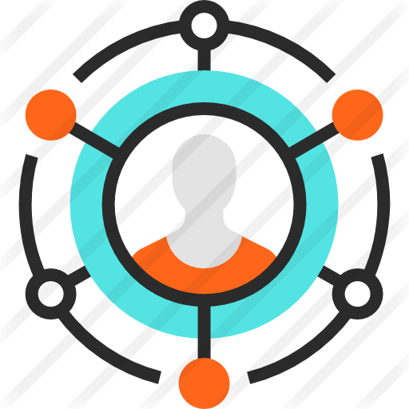
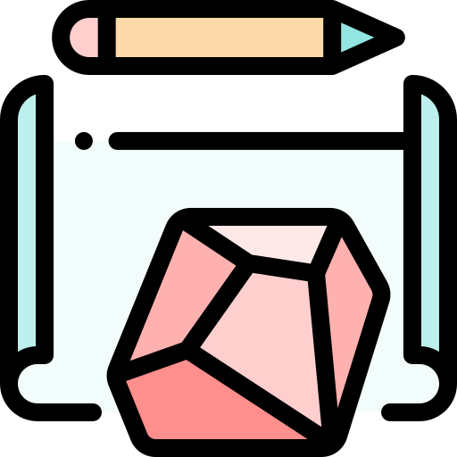
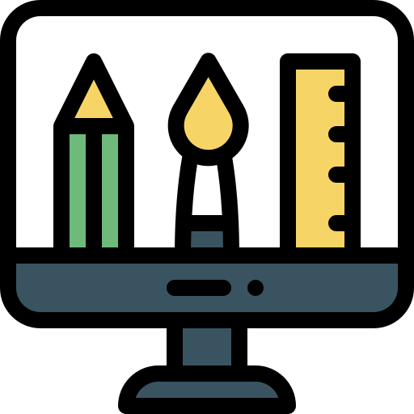

Role
- UX Design
- UI Design
- Branding

Deliverables
- Competitive Analysis
- User Survey
- User Personas
- User Stories and Flows
- Content Strategy
- Wireframes
- Usability Testing
- Style Guide
- Preference Testing
- Clickable Protoype
- Visual Design

Tools & Softwares
- Figma
- Sketch
- GitHub
- Atom
- Photoshop
- Invision
- Maze
- UsabilityHub